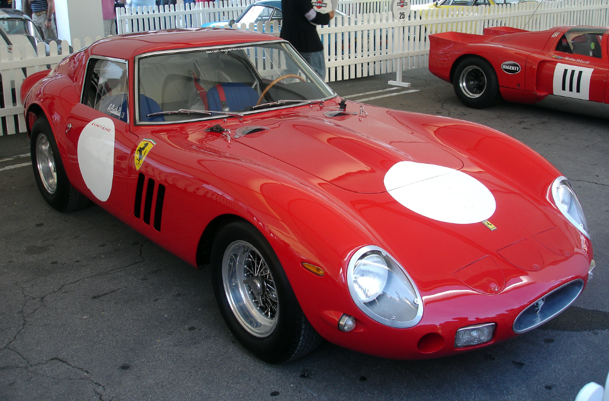

Истории редких предметов и их владельцев
Мир редких предметов — это увлекательное сочетание истории, искусства и человеческих судеб. За каждым уникальным объектом стоит не только его материальная ценность, но и история, которая делает его по-настоящему бесценным. От произведений искусства до антикварных автомобилей — такие предметы часто становятся символами эпох и объектами желания коллекционеров со всего мира.
Культовые вещи, которые уходили с аукционов за миллионы
Картину "Спаситель мира" Леонардо да Винчи
В 2017 году эта работа была продана на аукционе за рекордные 450,3 миллиона долларов. Картина, которая долгое время считалась утерянной, была найдена и стала предметом обсуждения экспертов по всему миру. Покупателем стал наследный принц Саудовской Аравии Мухаммед бин Салман, что добавило ещё больше загадочности к её истории.
Алмаз "Розовая звезда"
Один из крупнейших и самых чистых розовых бриллиантов в мире был продан за 71,2 миллиона долларов. Этот уникальный камень привлек внимание коллекционеров не только своей красотой, но и редкостью — подобные алмазы крайне редко появляются на рынке.
Феррари 250 GTO 1962 года
Этот автомобиль считается настоящей легендой среди коллекционеров. В 2018 году он был продан за 48,4 миллиона долларов, став самым дорогим автомобилем, когда-либо проданным на аукционе. История автомобиля, включая его участие в гонках и связь с известными личностями, делает его уникальным.

Истории владельцев
Пегги Гуггенхайм — коллекционер искусства
Пегги Гуггенхайм посвятила свою жизнь сбору произведений современного искусства. Её коллекция, включающая работы Пикассо, Дюшана и Поллока, стала основой одного из самых известных музеев в мире. Каждый предмет её коллекции имеет свою историю, связанную с личными встречами Пегги с художниками.
Пол Аллен — сооснователь Microsoft и коллекционер
Пол Аллен был не только успешным предпринимателем, но и страстным коллекционером. Его собрание включало редкие музыкальные инструменты, исторические документы и произведения искусства. После его смерти многие предметы были переданы на благотворительность или выставлены в музеях.
Почему эти предметы так ценны?
Редкие вещи привлекают коллекционеров своей уникальностью и историей. Для кого-то это возможность прикоснуться к великому прошлому, для других — способ выразить свою индивидуальность или вложить средства в объект, который будет расти в цене. Истории таких предметов напоминают нам, что ценность — это не только вопрос денег, но и отражение человеческой культуры, страсти и творчества.